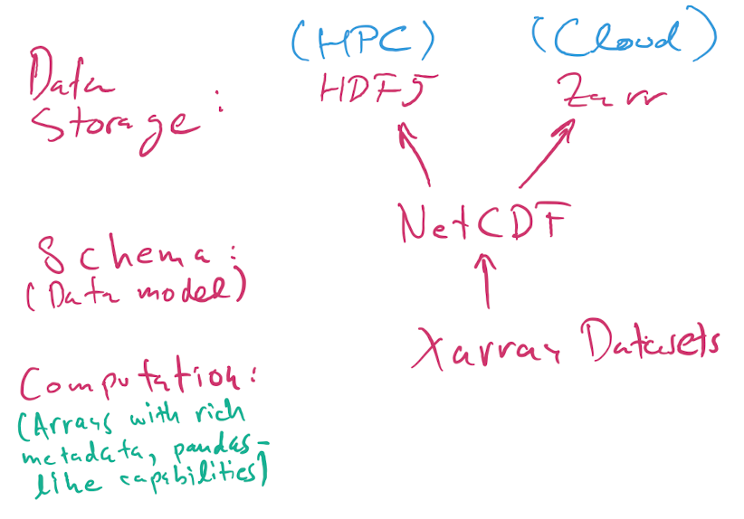

Data Serialization
Contents
Data Serialization¶
Pickle and Shelve
Numpy: npy, npz
JSON
Dataframes: CSV and Feather
HDF5, NetCDF, and Xarray
Pickle and Shelve¶
Native Python serialization
What can be pickled and unpickled?¶
The following types can be pickled:
None, True, and False;
integers, floating-point numbers, complex numbers;
strings, bytes, bytearrays;
tuples, lists, sets, and dictionaries containing only picklable objects;
For our purposes, the list stops here. In reality, the following can also be pickled, but I do not recommend doing so for now. There are scenarios where pickling these things makes sense, but they are more advanced and we will not discuss them for now:
functions (built-in and user-defined) defined at the top level of a module (using def, not lambda);
classes defined at the top level of a module;
instances of such classes whose
__dict__or the result of calling__getstate__()is picklable.
Warning
The pickle module is not secure. Only unpickle data you trust.
It is possible to construct malicious pickle data which will execute arbitrary code during unpickling. Never unpickle data that could have come from an untrusted source, or that could have been tampered with.
Consider signing data with hmac if you need to ensure that it has not been tampered with.
Safer serialization formats such as json may be more appropriate if you are processing untrusted data.
import pickle
pickle.dumps(1234, protocol=0)
b'I1234\n.'
pickle.dumps([1])
b'\x80\x04\x95\x06\x00\x00\x00\x00\x00\x00\x00]\x94K\x01a.'
a = [1, 1.5, "hello", {3, 4}, {'int': 9, 'real': 9.0, 'complex': 9j}]
with open('data.pkl', 'wb') as f:
pickle.dump(a, f)
with open('data.pkl', 'rb') as f:
b = pickle.load(f)
b
[1, 1.5, 'hello', {3, 4}, {'int': 9, 'real': 9.0, 'complex': 9j}]
A shelf of pickles¶
The shelve module provides a disk-stored object that behaves (mostly) like a dict, whose keys are strings and whose values are anything that can be pickled:
import shelve
x = 1234
with shelve.open('spam') as db:
db['eggs'] = 'eggs'
db['numbers'] = [1,2, 3, 9.99, 1j]
db['xx'] = x
%ls -l spam.*
-rw-r--r-- 1 jovyan jovyan 53 Apr 21 04:53 spam.bak
-rw-r--r-- 1 jovyan jovyan 1030 Apr 21 04:53 spam.dat
-rw-r--r-- 1 jovyan jovyan 53 Apr 21 04:53 spam.dir
Note
Do not rely on the shelf being closed automatically; always call close() explicitly when you don’t need it any more, or use shelve.open() as a context manager, as shown above.
with shelve.open('spam') as db:
e = db['eggs']
n = db['numbers']
print(f'{e = }')
print(f'{n = }')
e = 'eggs'
n = [1, 2, 3, 9.99, 1j]
db = shelve.open('spam')
for var, data in db.items():
print(f'{var} = {data}')
eggs = eggs
numbers = [1, 2, 3, 9.99, 1j]
xx = 1234
db.close()
Numpy: npy, npz¶
How to save and load NumPy objects provides more details, and all input/output APIs in numpy are described here.
As a minimum starter, you should know that:
Numpy has a native, simple, efficient, binary storage format for single arrays as
.npyfiles. These are portable across machines and versions of Numpy.Multiple arrays can be stored in a dict-like form in a single
.npzfile.
The relationship between npy and npz files is somewhat similar to that between single pickles and shelve objects in Python.
import numpy as np
a = np.array([1, 2, 3.4])
fname = 'arr.npy'
np.save(fname, a)
b = np.load(fname)
(a == b).all()
True
Multiple arrays (or scalar data) can be saved in a shelve-like object with the np.savez() function, that writes .npz files:
fname = 'arrays.npz'
np.savez(fname, a=a, b=np.random.normal(10), c=3.4)
arrays = np.load(fname)
arrays.files
['a', 'b', 'c']
arrays['a']
array([1. , 2. , 3.4])
arrays['c']
array(3.4)
JSON¶
JSON stands for JavaScript Object Notation - it is a human-readable format (it looks kind of like a Python dict; Jupyter notebooks are JSON files on-disk) that can represent native JavaScript types. In some cases it can be an alternative to Pickle, with the advantage of being natively portable to the Web and the JavaScript ecosystem. From the Python pickle docs, this quick comparison is useful for our purposes:
JSON is a text serialization format (it outputs unicode text, although most of the time it is then encoded to utf-8), while pickle is a binary serialization format;
JSON is human-readable, while pickle is not;
JSON is interoperable and widely used outside of the Python ecosystem, while pickle is Python-specific;
JSON, by default, can only represent a subset of the Python built-in types, and no custom classes; pickle can represent an extremely large number of Python types (many of them automatically, by clever usage of Python’s introspection facilities; complex cases can be tackled by implementing specific object APIs);
Unlike pickle, deserializing untrusted JSON does not in itself create an arbitrary code execution vulnerability.
import json
a = ['foo', {'bar': ['baz', None, 1.0, 2]}]
json.dumps(a)
'["foo", {"bar": ["baz", null, 1.0, 2]}]'
with open('test.json', 'w') as f:
json.dump(a, f)
with open('test.json', 'r') as f:
b = json.load(f)
b
['foo', {'bar': ['baz', None, 1.0, 2]}]
a == b
True
But be careful:
c = ['foo', {'bar': ('baz', None, 1.0, 2)}]
with open('test2.json', 'w') as f:
json.dump(c, f)
with open('test2.json', 'r') as f:
d = json.load(f)
c == d
False
d
['foo', {'bar': ['baz', None, 1.0, 2]}]
from IPython.display import JSON
JSON(c)
<IPython.core.display.JSON object>
GeoJSON: the meaning of a schema.
classroom = {
"type": "Feature",
"geometry": {
"type": "Point",
"coordinates": [-122.259699, 37.874171]
},
"properties": {
"name": "Stat 159 Classroom"
}
}
JSON(classroom)
<IPython.core.display.JSON object>
from IPython.display import GeoJSON
GeoJSON(classroom)
<IPython.display.GeoJSON object>
Dataframes: CSVs and Feather¶
Some useful performance comparisons regarding various ways of saving dataframes.
from pathlib import Path
import pandas as pd
df = pd.read_csv(Path.home()/"shared/climate-data/monthly_in_situ_co2_mlo_cleaned.csv")
df
| year | month | date_index | fraction_date | c02 | data_adjusted_season | data_fit | data_adjusted_seasonally_fit | data_filled | data_adjusted_seasonally_filed | |
|---|---|---|---|---|---|---|---|---|---|---|
| 0 | 1958 | 1 | 21200 | 1958.0411 | -99.99 | -99.99 | -99.99 | -99.99 | -99.99 | -99.99 |
| 1 | 1958 | 2 | 21231 | 1958.1260 | -99.99 | -99.99 | -99.99 | -99.99 | -99.99 | -99.99 |
| 2 | 1958 | 3 | 21259 | 1958.2027 | 315.70 | 314.43 | 316.19 | 314.90 | 315.70 | 314.43 |
| 3 | 1958 | 4 | 21290 | 1958.2877 | 317.45 | 315.16 | 317.30 | 314.98 | 317.45 | 315.16 |
| 4 | 1958 | 5 | 21320 | 1958.3699 | 317.51 | 314.71 | 317.86 | 315.06 | 317.51 | 314.71 |
| ... | ... | ... | ... | ... | ... | ... | ... | ... | ... | ... |
| 763 | 2021 | 8 | 44423 | 2021.6219 | -99.99 | -99.99 | -99.99 | -99.99 | -99.99 | -99.99 |
| 764 | 2021 | 9 | 44454 | 2021.7068 | -99.99 | -99.99 | -99.99 | -99.99 | -99.99 | -99.99 |
| 765 | 2021 | 10 | 44484 | 2021.7890 | -99.99 | -99.99 | -99.99 | -99.99 | -99.99 | -99.99 |
| 766 | 2021 | 11 | 44515 | 2021.8740 | -99.99 | -99.99 | -99.99 | -99.99 | -99.99 | -99.99 |
| 767 | 2021 | 12 | 44545 | 2021.9562 | -99.99 | -99.99 | -99.99 | -99.99 | -99.99 | -99.99 |
768 rows × 10 columns
df.to_feather("co2.fth")
%ls -l co2*
-rw-r--r-- 1 jovyan jovyan 31850 Apr 21 04:53 co2.fth
df2 = pd.read_feather("co2.fth")
df2
| year | month | date_index | fraction_date | c02 | data_adjusted_season | data_fit | data_adjusted_seasonally_fit | data_filled | data_adjusted_seasonally_filed | |
|---|---|---|---|---|---|---|---|---|---|---|
| 0 | 1958 | 1 | 21200 | 1958.0411 | -99.99 | -99.99 | -99.99 | -99.99 | -99.99 | -99.99 |
| 1 | 1958 | 2 | 21231 | 1958.1260 | -99.99 | -99.99 | -99.99 | -99.99 | -99.99 | -99.99 |
| 2 | 1958 | 3 | 21259 | 1958.2027 | 315.70 | 314.43 | 316.19 | 314.90 | 315.70 | 314.43 |
| 3 | 1958 | 4 | 21290 | 1958.2877 | 317.45 | 315.16 | 317.30 | 314.98 | 317.45 | 315.16 |
| 4 | 1958 | 5 | 21320 | 1958.3699 | 317.51 | 314.71 | 317.86 | 315.06 | 317.51 | 314.71 |
| ... | ... | ... | ... | ... | ... | ... | ... | ... | ... | ... |
| 763 | 2021 | 8 | 44423 | 2021.6219 | -99.99 | -99.99 | -99.99 | -99.99 | -99.99 | -99.99 |
| 764 | 2021 | 9 | 44454 | 2021.7068 | -99.99 | -99.99 | -99.99 | -99.99 | -99.99 | -99.99 |
| 765 | 2021 | 10 | 44484 | 2021.7890 | -99.99 | -99.99 | -99.99 | -99.99 | -99.99 | -99.99 |
| 766 | 2021 | 11 | 44515 | 2021.8740 | -99.99 | -99.99 | -99.99 | -99.99 | -99.99 | -99.99 |
| 767 | 2021 | 12 | 44545 | 2021.9562 | -99.99 | -99.99 | -99.99 | -99.99 | -99.99 | -99.99 |
768 rows × 10 columns
HDF5, NetCDF, and Xarray¶
Here is a nice introduction to HDF5 from our NERSC friends, and this is a good intro tutorial with code examples. The docs for the h5py Python library have more techincal details.
In brief (oversimplifying, but OK for our purposes):
HDF5 is a flexible binary file format that can store hierarchically nested data, with native support for multidimensional dense arrays of any numerical type. You can think of it as “a filesystem in a file”, in that you can nest values in named “groups” (aka folders), and you can also store lots of metadata.
NetCDF is a data model. It specifies how the data should be structured.
Xarray is a Python library for numerical computing and data analysis that exposes the NetCDF data model as Python objects. Xarray objects have rich computational capabilities that, to first approximation, are a mix of the power of Numpy arrays and Pandas DataFrames.
Note
When we say NetCDF, we will strictly mean NetCDF4. There’s an older version 3 that wasn’t based on HDF5, and that we will not discuss further.
Today, most NetCDF files you encountered use the HDF5 binary format for storage, but as of 2020 NetCDF data can also be stored using the Zarr format that is more suited for cloud storage than HDF5, which was mostly designed for supercomputers.
So, the picture is:
A NetCDF file stored using HDF5 is always a valid HDF5 file.
A NetCDF file can also be stored in Zarr format. You’re more likely to encounter these when working in the cloud. For small files, it doesn’t make much difference whether the format is
h5orzarr, but for larger data it does.The HDF5 format can represent data that is not valid NetCDF: it supports a richer set of capabilities beyond NetCDF. Unless you have extremely specialized needs, I suggest you stick to the NetCDF model, which is already very rich and powerful.

from pathlib import Path
import xarray as xr
DATA_DIR = Path.home()/Path('shared/climate-data')
ds = xr.open_dataset(DATA_DIR / "era5_monthly_2deg_aws_v20210920.nc")
ds
<xarray.Dataset>
Dimensions: (time: 504, latitude: 90, longitude: 180)
Coordinates:
* time (time) datetime64[ns] ...
* latitude (latitude) float32 ...
* longitude (longitude) float32 ...
Data variables: (12/15)
air_pressure_at_mean_sea_level (time, latitude, longitude) float32 ...
air_temperature_at_2_metres (time, latitude, longitude) float32 ...
air_temperature_at_2_metres_1hour_Maximum (time, latitude, longitude) float32 ...
air_temperature_at_2_metres_1hour_Minimum (time, latitude, longitude) float32 ...
dew_point_temperature_at_2_metres (time, latitude, longitude) float32 ...
eastward_wind_at_100_metres (time, latitude, longitude) float32 ...
... ...
northward_wind_at_100_metres (time, latitude, longitude) float32 ...
northward_wind_at_10_metres (time, latitude, longitude) float32 ...
precipitation_amount_1hour_Accumulation (time, latitude, longitude) float32 ...
sea_surface_temperature (time, latitude, longitude) float32 ...
snow_density (time, latitude, longitude) float32 ...
surface_air_pressure (time, latitude, longitude) float32 ...
Attributes:
institution: ECMWF
source: Reanalysis
title: ERA5 forecasts%%time
file_aws = "https://mur-sst.s3.us-west-2.amazonaws.com/zarr-v1"
ds_sst = xr.open_zarr(file_aws, consolidated=True)
ds_sst
CPU times: user 2.57 s, sys: 207 ms, total: 2.77 s
Wall time: 4.4 s
<xarray.Dataset>
Dimensions: (time: 6443, lat: 17999, lon: 36000)
Coordinates:
* lat (lat) float32 -89.99 -89.98 -89.97 ... 89.97 89.98 89.99
* lon (lon) float32 -180.0 -180.0 -180.0 ... 180.0 180.0 180.0
* time (time) datetime64[ns] 2002-06-01T09:00:00 ... 2020-01-2...
Data variables:
analysed_sst (time, lat, lon) float32 dask.array<chunksize=(5, 1799, 3600), meta=np.ndarray>
analysis_error (time, lat, lon) float32 dask.array<chunksize=(5, 1799, 3600), meta=np.ndarray>
mask (time, lat, lon) float32 dask.array<chunksize=(5, 1799, 3600), meta=np.ndarray>
sea_ice_fraction (time, lat, lon) float32 dask.array<chunksize=(5, 1799, 3600), meta=np.ndarray>
Attributes: (12/47)
Conventions: CF-1.7
Metadata_Conventions: Unidata Observation Dataset v1.0
acknowledgment: Please acknowledge the use of these data with...
cdm_data_type: grid
comment: MUR = "Multi-scale Ultra-high Resolution"
creator_email: ghrsst@podaac.jpl.nasa.gov
... ...
summary: A merged, multi-sensor L4 Foundation SST anal...
time_coverage_end: 20200116T210000Z
time_coverage_start: 20200115T210000Z
title: Daily MUR SST, Final product
uuid: 27665bc0-d5fc-11e1-9b23-0800200c9a66
westernmost_longitude: -180.0Warning
The above picture is incomplete…
ds = xr.open_dataset("data/test_hgroups.nc")
ds
<xarray.Dataset>
Dimensions: (recNum: 74)
Dimensions without coordinates: recNum
Data variables:
UTC_time (recNum) object '2012-03-04 03:54:19' ... '2012-03-04 04:24:10'import netCDF4 as nc
dsn = nc.Dataset("data/test_hgroups.nc")
dsn
<class 'netCDF4._netCDF4.Dataset'>
root group (NETCDF4 data model, file format HDF5):
dimensions(sizes): recNum(74)
variables(dimensions): <class 'str'> UTC_time(recNum)
groups: mozaic_flight_2012030403540535_ascent, mozaic_flight_2012030321335035_descent, mozaic_flight_2012030403540535_descent, mozaic_flight_2012030412545335_ascent, mozaic_flight_2012030419144751_ascent, mozaic_flight_2012030319051051_descent, mozaic_flight_2012030421382353_ascent
ds4 = xr.open_dataset("data/test_hgroups.nc",
group="mozaic_flight_2012030403540535_ascent")
ds4
<xarray.Dataset>
Dimensions: (recNum: 74)
Dimensions without coordinates: recNum
Data variables:
air_press (recNum) float64 1.008e+05 9.851e+04 ... 2.31e+04 2.275e+04
CO (recNum) float64 216.0 189.0 167.0 159.0 ... 80.0 77.0 85.0 73.0
O3 (recNum) float64 -99.0 -99.0 -99.0 -99.0 ... -99.0 -99.0 -99.0
altitude (recNum) float64 46.4 237.0 387.1 ... 1.087e+04 1.097e+04
lat float64 32.01
lon float64 34.89
Attributes:
airport_dep: TLV
flight: 2012030403540535
level: calibrated
airport_arr: FRA
mission: mozaic
time_dep: 2012-03-04 03:54:05
aircraft: 3
link: http://www.iagos.fr/extract
phase: ascent
time_arr: 2012-03-04 08:01:44